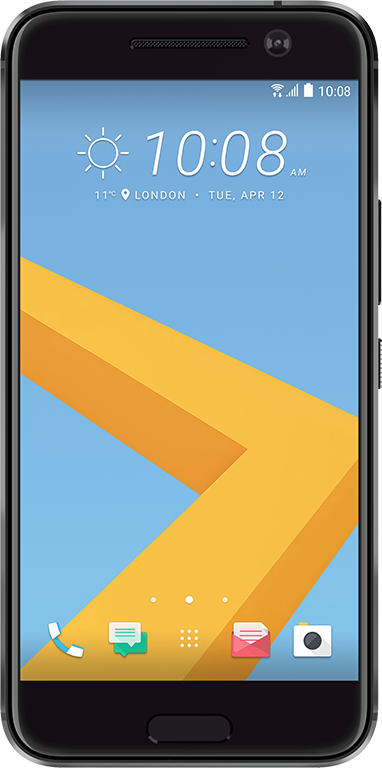
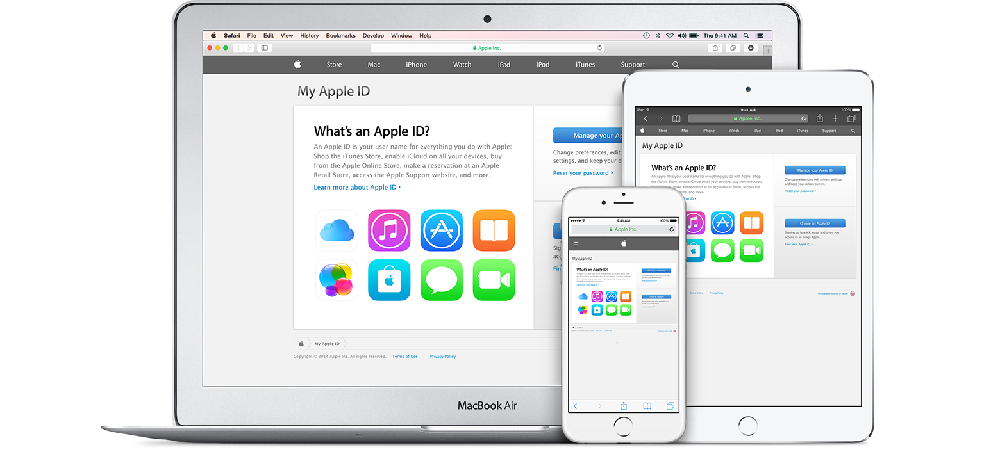
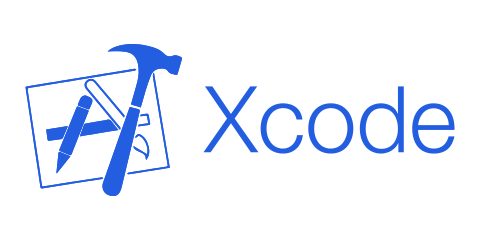

Добро пожаловать на наш сайт!
Мы поможем Вам познакомиться поближе с темой мобильной разработки.
|
iOS (до 24 июня 2010 года — iPhone OS) — мобильная операционная система для смартфонов, электронных планшетов, носимых проигрывателей и некоторых других устройств, разрабатываемая и выпускаемая американской компанией Apple. Что нужно знать о разработке приложений для iOS. Для того, чтобы начать разработку под iOS Вам необходимо изучить язык программирования Swift. Изучить разработку под iOS. |

Android — операционная система для смартфонов, планшетов и других цифровых устройств. Основана на ядре Linux и собственной реализации виртуальной машины Java от Google. Изначально разрабатывалась компанией Android, Inc., которую затем купила Google. Что нужно знать о разработке приложений для Android. Первый и важнейший шаг в разработке под Android - это изучение Java и XML. Изучить разработку под Android. |
Разработка под iOS
Основным инструментом программирования под ОС iOS является язык Swift и Objective-C. Конечно, есть и кроссплатформенные решения, такие как реализация ПО на языке Java-Script или C#, но сегодня мы поговорим про программирование с помощью языка, который был создан самой компанией Apple для своих же устройств. Именно им и является Swift.  |
|
Для разработки на языке программирования Swift Вам понадобится компьютер с установленной ОС OSX. Но само мобильное устройство не необходимо, так как Вы можете проверять работоcпсобность своих приложений на эмуляторе мобильных устройств.  |
|
И заключающим шагом, чтобы наконец присутпить к разработке мобильных приложений для платформы iOS, является наличие среды разработки Xcode. Именно в нем мы и будем писать, запускать и проверять наши приложения.  |
Разработка под Android
Разработчики под ОС Android больше всего предпочитают язык программирования Java в связке с языком разметки XML для разработки приложений. В отличие от iOS Android является открытой системой, что делает ее более гибкой для разработки и создает большее пространство для фантазии.  |
|
Для разработки на языке программирования Java для Android Вам понадобится компьютер с необходимыми инструментами: JDK — набор для разработки на языке Java и Android SDK and AVD Manager — набор утилит для разработки + эмулятор.  |
|
Осталось лиш выбрать среду разработки. IDE для наших целей большое множество: Eclipse, IntelliJ IDEA Community Edition, Netbeans и Android Studio. Многие разработчики предпочитают именно Android Studio, так как эта IDE была разработана компанией Google специально для Android разработки.  |